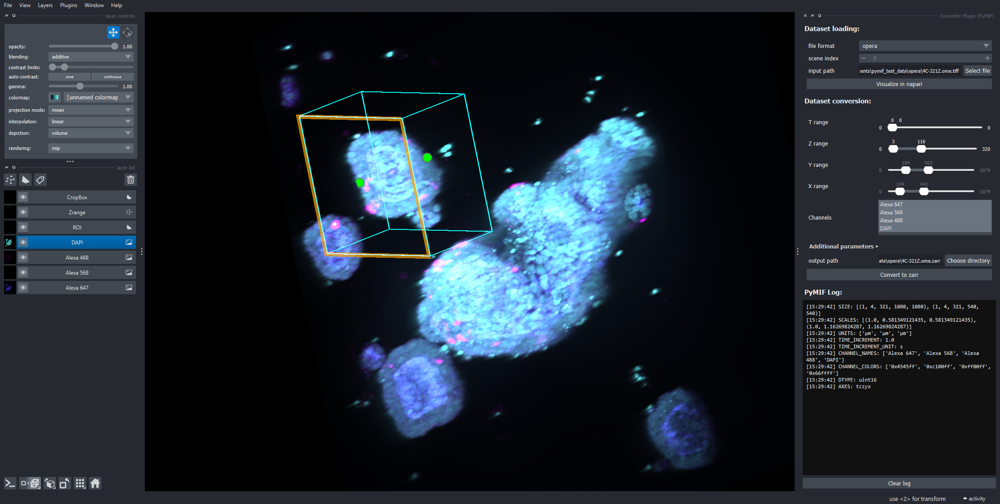

PyMIF — microscopy I/O, OME-Zarr conversion, and NGFF utilities
PyMIF is a Python package for reading microscopy datasets from multiple acquisition systems, building multiscale pyramids, writing OME-NGFF / OME-Zarr, and interacting with those datasets from Python, the command line, and napari.
It is developed for users of the Mesoscopic Imaging Facility (MIF), but the repository now covers a broader scope than simple vendor import: it includes a reusable manager API, NGFF-aware zarr creation utilities, region writing for images and labels, batch conversion helpers, and napari widgets for conversion and overview generation.
For the rendered docs, see the documentation page.
[!NOTE] Current PyMIF releases write NGFF v0.5 / Zarr v3 by default. Existing NGFF v0.4 / Zarr v2 datasets remain supported through
ZarrManagerandZarrV04Manager.

Demonstration of PyMIF usage. Data: near newborn mouse embryo (~1.5 cm long). Fluorescence signal: methylene blue + autofluorescence. Sample processed and imaged by Montserrat Coll at the Mesoscopic Imaging Facility. Video speed: 2.5× real speed.
Current repository scope
PyMIF currently contains five main pieces:
Microscope managers for reading datasets and normalizing them to a common API.
OME-Zarr / NGFF writing utilities for full dataset export, empty dataset creation, subgroup creation, and region updates.
Pyramid and subsetting helpers for multiscale generation and dataset cropping.
CLI tools for one-off and batch conversion to zarr.
Napari widgets for interactive conversion, ROI selection, and overview generation.
Supported data sources
The main reader classes currently exposed by pymif.microscope_manager are:
ArrayManager— wrap an in-memory NumPy or Dask array using PyMIF metadata conventions.LuxendoManager— Luxendo XML + HDF5 datasets.OperaManager— Opera Phenix / Opera PE OME-TIFF style datasets.ScapeManager— Leica SCAPE OME-TIFF + XLIF datasets.ViventisManager— Viventis LS1 datasets.ZeissManager— Zeiss CZI datasets.ZarrManager— NGFF v0.4/v0.5 OME-Zarr datasets.ZarrV04Manager— compatibility reader for older v0.4-style datasets.
Core capabilities
Read vendor-specific microscopy metadata into a shared metadata schema.
Represent image data lazily with Dask.
Build multiscale pyramids from a base-resolution dataset.
Write OME-Zarr in NGFF v0.4/Zarr v2 or NGFF v0.5/Zarr v3 form.
Create empty image groups and label groups inside an existing zarr hierarchy.
Write image patches or label patches back into an existing zarr dataset.
Visualize datasets in napari.
Convert single datasets or CSV-defined batches from the CLI.
Installation
A clean conda environment is recommended:
conda create -n pymif python=3.12
conda activate pymif
Then install from the repository:
git clone https://github.com/grinic/pymif.git
cd pymif
pip install .
For development work:
pip install -e .
To use the napari widgets as well:
pip install -e .[napari]
Quick usage
Python API
import pymif.microscope_manager as mm
# Read a source dataset
source = mm.ViventisManager("path/to/Position_1")
# Build a pyramid in memory
source.build_pyramid(num_levels=3)
# Export to OME-Zarr (default: NGFF v0.5 / zarr v3)
source.to_zarr("output.zarr")
# Re-open the written zarr dataset
z = mm.ZarrManager("output.zarr")
viewer = z.visualize(start_level=0, in_memory=False)
Create an empty zarr dataset from metadata
import pymif.microscope_manager as mm
z = mm.ZarrManager(
"empty.zarr",
mode="a",
metadata={
"size": [(1, 2, 16, 256, 256)],
"chunksize": [(1, 1, 16, 128, 128)],
"scales": [(2.0, 0.5, 0.5)],
"units": ("micrometer", "micrometer", "micrometer"),
"axes": "tczyx",
"channel_names": ["GFP", "RFP"],
"channel_colors": ["00FF00", "FF0000"],
"time_increment": 1.0,
"time_increment_unit": "second",
"dtype": "uint16",
},
)
Update a region in an existing zarr image
import numpy as np
import pymif.microscope_manager as mm
z = mm.ZarrManager("output.zarr", mode="a")
patch = np.full((1, 1, 2, 64, 64), 999, dtype=np.uint16)
z.write_image_region(
patch,
t=slice(0, 1),
c=slice(0, 1),
z=slice(10, 12),
y=slice(100, 164),
x=slice(100, 164),
level=0,
)
CLI
Single conversion:
pymif 2zarr -i INPUT_PATH -m MICROSCOPE -z OUTPUT_ZARR
Batch conversion from a CSV manifest:
pymif batch2zarr -i INPUT_FILE.csv
Get help:
pymif -h
pymif 2zarr -h
pymif batch2zarr -h
Napari plugin
PyMIF provides napari widgets for conversion and overview generation. After installing the napari extras, the conversion widget is available from:
Plugins > PyMIF > Converter Plugin
The widget can load data, preview channels, define a 3D ROI, restrict z/time/channel ranges, choose pyramid settings, and export to OME-Zarr.

Documentation strategy in this repository
PyMIF uses Sphinx + MyST + AutoAPI. In practice this means:
user-facing project scope belongs in
README.mdanddoc/README.mdAPI pages are generated automatically from Python docstrings
documenting classes, methods, and helper functions directly in the source code is the best way to improve the docs
The most important API entry points to document and keep stable are:
MicroscopeManagervendor reader classes in
pymif.microscope_managerZarrManagerzarr-writing helpers in
pymif.microscope_manager.utilsCLI entry points in
pymif.clinapari widgets in
pymif.napari
Contributing and extending PyMIF
New microscope support is typically added by subclassing MicroscopeManager and implementing read() so that it returns:
Tuple[List[dask.array.Array], Dict[str, Any]]
The returned metadata should follow the PyMIF schema used across the repository, including:
{
"size": [... per pyramid level ...],
"chunksize": [... per pyramid level ...],
"scales": [... per pyramid level ...],
"units": (...),
"axes": "tczyx",
"channel_names": [...],
"channel_colors": [...],
"time_increment": ...,
"time_increment_unit": ...,
"dtype": ...,
}
Once that contract is respected, the new manager automatically benefits from the common PyMIF tooling such as build_pyramid(), to_zarr(), visualize(), reorder_channels(), update_metadata(), and subset_dataset().